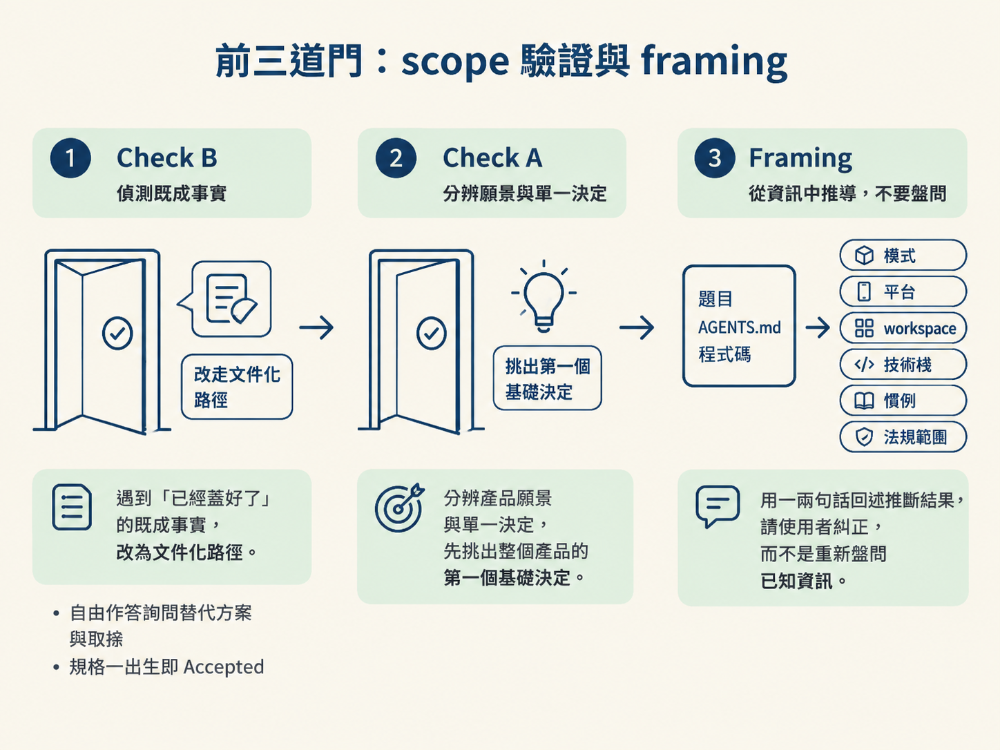
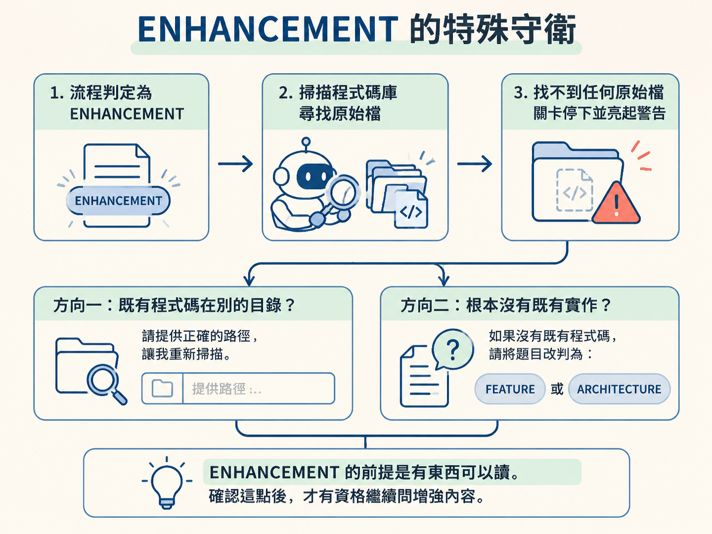
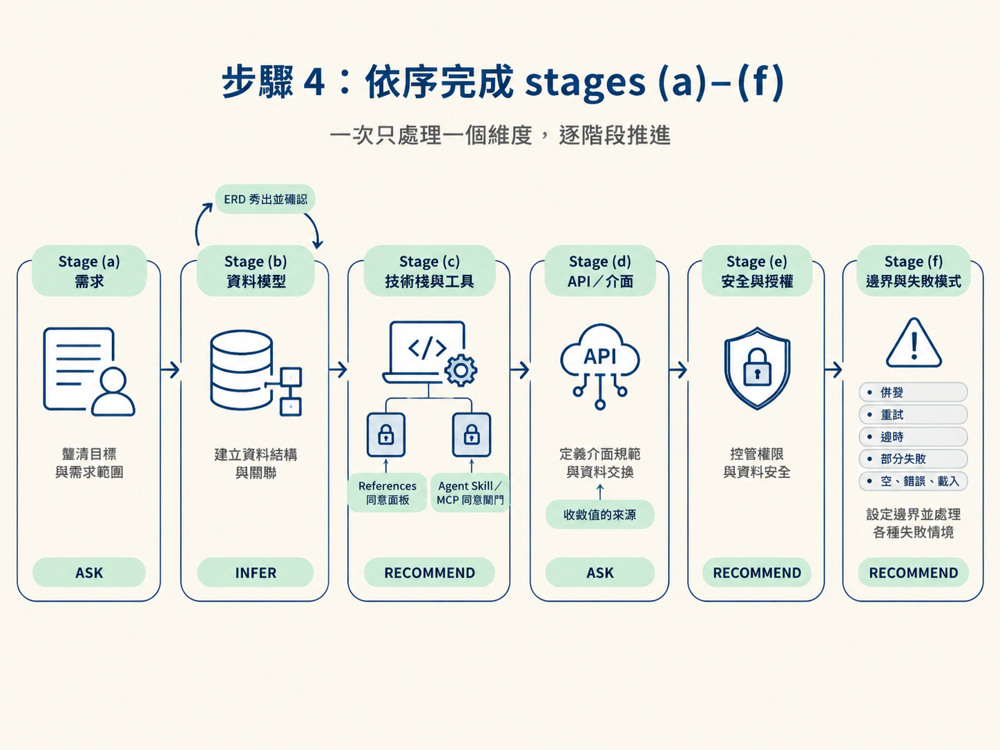

這一節要做的是：照著 scope validation、framing 與 stages (a)–(f) 的順序，跑完一場設計訪談。你會知道每個階段該問什麼、哪些內容可以推斷、什麼時候必須停下來 show-and-confirm。
開始前，你需要兩樣東西：
AGENTS.md。完成後，你會得到一套已簽核的設計內容，包括編號過的驗收條件、確認過的資料模型、定案的技術棧、API 介面、授權模型與邊界情境。這些內容就是下一步寫入 spec 檔案的原料。
這套流程的重點是順序。若先討論 API，後來才發現資料模型還沒決定；或先挑工具，才發現需求範圍根本畫錯，就會一路回頭重工。閘門的作用，就是在進入下一層前先確認上一層已經站穩。
如果操作是 create 或 supersede，/architect 在問第一個設計問題前，必須完整讀過 internal/design-conversation.md，並依照檔案中的流程執行。
「問什麼、推什麼、自己查什麼」只是意圖，不是操作協議。分類法能告訴你問題屬於 INFER、ASK 或 RECOMMEND，卻不會告訴你階段順序，也不會告訴你何時該停下來確認。真正的流程寫在這個檔案裡。
因此，在讀完之前：
唯一可以跳過這一步的情況，是原地更新既有 spec，因為那不是重新設計。
第一道閘門是確認題目真的需要從頭設計。檢查順序是 Check B 先、Check A 後。
先掃描題目裡是否出現「決定已經做完」的訊號，例如「我們已經用了」、「我們選了」、「幫我把它記錄下來」或「已經上線了」。
如果掃到這類訊號，/architect 不會直接開始設計，而是先讓你選：
若你選擇記錄，接著用自由文字回答三件事：
問完後會跳過完整的分階段對話，因為文件描述的是既成事實，spec 狀態會直接寫成 Accepted。你在這裡已經做完第一個決定：要記錄既有決策，還是重新設計。

如果題目是「一個給自由工作者接案的平台」，它描述的是產品願景，不是單一要決定的事項，而且拆開後可能需要五份以上的 spec。
這時 /architect 會先說明：「/architect 一次只處理一個決策。」接著生成四個最基礎的起點決策，例如：
你挑出其中一個，才會進入 Framing。這一步的可驗證結果是：題目已經縮成一個可處理的設計決策。
Framing 的工作，是先把題目的背景定下來。它不會逐項盤問，而是從題目、AGENTS.md 與程式碼中推斷以下內容：
AGENTS.md。AGENTS.md 推斷語言、框架、資料庫與社群 skill。AGENTS.md 或產品內容推斷團隊規模、規模量與合規要求。推斷完成後，/architect 會用一兩句話講回來，例如：「我把這讀成既有技術棧上的新 FEATURE，平台是網頁；如果讀錯請糾正我。」
這比逐項問「是網頁嗎？用什麼框架？」更快。若推斷錯了，你只要立即修正即可，然後再往下走。
如果判斷結果是 ENHANCEMENT，卻在程式碼庫裡找不到任何原始檔，流程會先停下來詢問：
因為 ENHANCEMENT 的前提是「有東西可以讀」。確認這點後，才有資格繼續問增強內容。

正式提問前，/architect 會先列出這個功能所有需要定案的「承重」維度，並為每一項指定階段與處理方式：INFER、ASK 或 RECOMMEND。
清單通常包括：
/develop。這份清單不代表每一項都一定適用。它的作用是讓 agent 在開始提問前，先把可能承重的地方攤開來；若某項不適用，也要明確判定，而不是讓它默默消失。
接下來一次處理一個維度。每一題都列出當下真正適用的選項，恰好一個選項標為「推薦」並附上一句理由；最後由工程師做選擇。
一次問一題，依序確認核心任務、主要的順利流程、關鍵規則與限制，以及重要的失敗情況。
不要一開始就端出完整的驗收條件清單。應該從你的回答中逐步推導 AC-1、AC-2 等編號驗收條件。這些條件會成為後續 /develop 要實作、/check verify 要驗證的契約主線。
先確認實體，再逐一確認每個實體的欄位、名稱、型別與必填或可空；接著確認一對一、一對多或多對多的關聯，最後處理唯一性、保留規則與不變量。
問完後，把結果組成 ERD 風格的表秀給你看，進入確認面板。若不正確，就修改後再次展示，直到你接受。資料模型一旦錯了，會牽連許多後續決定，因此必須有自己的確認迴圈。
依照相依順序推進，同一輪最多詢問四個獨立層次。每個層次都列出當下真實可用的選項，標出一個推薦選項並附上理由，由你選擇。
如果某個層次已被既有技術棧決定，就用 INFER，不再重問。若是 greenfield 專案，這裡會先出現 References 面板，讓你決定是否上網查現況。只要這一輪選了任何新工具，就會觸發 Agent Skill 與 MCP 同意閘門。
先確認需要哪些介面，再逐一確認每個端點的方法、輸入、輸出、認證需求與關鍵錯誤。
完成後要收斂值的來源：對每個驗收條件，逐一確認它需要的每個值，是由哪個介面產生、計算或顯示。如果某個值會被需要，卻沒有指定來源，就代表仍有輸入尚未決定，不能留給建置者自行發明。
逐條確認誰可以讀、誰可以寫，以及擁有權、角色、跨租戶與組織的範圍。最後確認這個功能涉及哪些合規範圍。
一次處理一個失敗情境，包括併發、重試、逾時、部分失敗，以及空、錯誤與載入狀態。

Stage (c) 有兩個「先問再做」的閘門，必須分清楚它們何時會啟動。
只問一次，並把兩件事合併成同一個問題：要不要上網查現況，以及要不要在 spec 加入 References 段落。
如果是全新專案的選棧決策，會建議選擇「來源加網路連結」，先確認當下工具生態，再提出選項。你做完決定後，寫 spec 時會重複使用這個結果，不會再次詢問。
只有在這一輪真的選了尚未安裝的新工具時才會出現。詢問是必要的，但搜尋不是。
在你選擇「幫我找」之前，流程不會搜尋、抓取、安裝或啟動任何東西。四個選項中，只有「幫我找」會實際執行搜尋。
如果題目本身就是「選整個技術棧」，這場對話就是 Stage (c)。流程會逐層確認應用型態、框架、資料庫、認證、部署、API、可觀測性，以及這個專案真正需要的其他細部工具。
這種情況下，驗收條件與資料模型要等選完技術棧後才推導，不會放在前面的閘門。
如果題目是一個頁面或畫面，則會在 Stage (a) 與 Stage (d) 之間插入頁面設計階段，逐一確認頁面組成、設計系統方向、元件盤點與素材策略。
所有階段完成後，先不要急著寫 spec。必須確認上面列出的每個承重維度，至少符合以下其中一種狀態：
只要有一個維度仍然懸著，就繼續問。
這道閘門是用來擋住「訪談太短」的假象。真正的功能設計通常會跨越多個維度、經過好幾輪問題；如果三兩下就結束，往往不是需求很單純，而是有內容漏問。那些沒被決定的地方，最後會在建置到一半時變成沒人負責的岔路。

分階段設計對話的順序是：先讀流程檔（硬閘門）→ Scope validation 的 Check B、Check A → 用 Framing 推斷背景 → 列出承重維度 → 依序完成 Stage (a) 需求到 Stage (f) 邊界 → 通過填滿度閘門。每一題恰好有一個推薦選項與一句理由；資料模型要展示後再確認；新工具要通過同意閘門。
走完後，你手上應該是一份完整、已簽核的設計：驗收條件、資料模型、技術棧、API、授權規則與失敗情境都已經有明確答案。這些內容還沒寫成檔案，但已經足以進入下一步，把決策寫到正確位置與形狀的 spec，接著交叉檢查與確認，再依 spec 類型決定狀態。